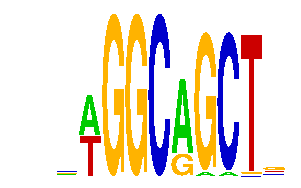

family_18 |
|---|
|  |
| Download PWM |
| Download instances (motifs) |
| Show motif distribution |
Query_ID | Query_Consensus | Subject_Name | Source_DB | Subject_ID | Length | Orientation | Offset | Divergence | Overlap | Subject_Consensus |
|---|
Sequence | Start_position (from start) | Start_position (from end) | Average conservation | Best conservation score | Instance_with_best_CS | Best_Z-score | Instance_with_best_ZS | Strand |
|---|---|---|---|---|---|---|---|---|
| chr1:24113949-24114949 | 413 | 423 | 0.0071 | 0.016 | .WGGCRGCT. | 16.834736 | .WGGCRGCT. | -1 |
| chr8:119927309-119928309 | 455 | 465 | 0.0142 | 0.069 | .WGGCRGCT. | 16.834736 | .WGGCRGCT. | 1 |
| chr11:109483572-109484572 | 464 | 474 | 0.0003 | 0.001 | .WGGCRGCT. | 16.834736 | .WGGCRGCT. | 1 |
| chr2:172912809-172913809 | 51 | 61 | 0.0542 | 0.061 | .WGGCRGCT. | 16.834736 | .WGGCRGCT. | 1 |
| chr4:151387305-151388305 | 814 | 824 | 0.0312 | 0.039 | AAGGCGAASR | 18.510172 | AAGGCGAASR | 1 |
| chr11:59521311-59522311 | 837 | 847 | 0.001 | 0.002 | .WGGCRGCT. | 16.834736 | .WGGCRGCT. | -1 |
| chr4:55294133-55295133 | 431 | 441 | NA | NA | .WGGCRGCT. | 16.834736 | .WGGCRGCT. | -1 |
| chr15:25375163-25376163 | 90 | 100 | 0.0002 | 0.001 | .WGGCRGCT. | 16.834736 | .WGGCRGCT. | 1 |
| chr5:122543312-122544312 | 873 | 883 | 0.0005 | 0.001 | .WGGCRGCT. | 16.834736 | .WGGCRGCT. | 1 |
| chr14:21483110-21484110 | 674 | 684 | 0.9998 | 1 | .WGGCRGCT. | 16.834736 | .WGGCRGCT. | 1 |
| chr16:10489603-10490603 | 101 | 111 | 0.0481 | 0.138 | .WGGCRGCT. | 16.834736 | .WGGCRGCT. | 1 |
| chr11:58989731-58990731 | 685 | 695 | 0.7367 | 1 | .WGGCRGCT. | 16.834736 | .WGGCRGCT. | 1 |
| chr5:150516015-150517015 | 566 | 576 | 0.0032 | 0.01 | .WGGCRGCT. | 16.834736 | .WGGCRGCT. | 1 |
| chr10:90703960-90704960 | 489 | 499 | 0.9586 | 0.994 | .WGGCRGCT. | 16.834736 | .WGGCRGCT. | -1 |
| chr11:21907823-21908823 | 857 | 867 | 0.9186 | 0.964 | .WGGCRGCT. | 16.834736 | .WGGCRGCT. | 1 |
| chr14:55577748-55578748 | 177 | 187 | 0.0003 | 0.002 | .WGGCRGCT. | 16.834736 | .WGGCRGCT. | -1 |
| chr18:39077657-39078657 | 74 | 84 | 0.0076 | 0.013 | .WGGCRGCT. | 16.834736 | .WGGCRGCT. | 1 |
| chr1:61290337-61291337 | 268 | 278 | 0.9944 | 1 | .WGGCRGCT. | 16.834736 | .WGGCRGCT. | -1 |
| chr15:99938390-99939390 | 308 | 318 | 0.3606 | 0.608 | .WGGCRGCT. | 16.834736 | .WGGCRGCT. | -1 |
| chr18:67529297-67530297 | 731 | 741 | 0.001 | 0.003 | .WGGCRGCT. | 16.834736 | .WGGCRGCT. | 1 |
| chr5:148838159-148839159 | 764 | 774 | 0.0188 | 0.042 | .WGGCRGCT. | 16.834736 | .WGGCRGCT. | -1 |
| chr5:89358159-89359159 | 816 | 826 | 0.9985 | 1 | .WGGCRGCT. | 16.834736 | .WGGCRGCT. | 1 |
| chr12:85722834-85723834 | 981 | 991 | 0.0049 | 0.009 | .WGGCRGCT. | 16.834736 | .WGGCRGCT. | -1 |
| chr3:97455092-97456092 | 678 | 688 | 0.0119 | 0.03 | .WGGCRGCT. | 16.834736 | .WGGCRGCT. | -1 |
| chr1:91647050-91648050 | 742 | 752 | 1 | 1 | .WGGCRGCT. | 16.834736 | .WGGCRGCT. | 1 |
| chr14:26136986-26137986 | 640 | 650 | 1 | 1 | .WGGCRGCT. | 16.834736 | .WGGCRGCT. | 1 |
| chr7:82759381-82760381 | 510 | 520 | 0.0004 | 0.003 | .WGGCRGCT. | 16.834736 | .WGGCRGCT. | -1 |
| chr17:12926913-12927913 | 516 | 526 | 0.0064 | 0.017 | .WGGCRGCT. | 16.834736 | .WGGCRGCT. | -1 |
| chr1:83341906-83342906 | 875 | 885 | 0.0028 | 0.008 | .WGGCRGCT. | 16.834736 | .WGGCRGCT. | 1 |
| chr4:32976091-32977091 | 286 | 296 | 0.01 | 0.016 | .WGGCRGCT. | 16.834736 | .WGGCRGCT. | -1 |
| chr3:121593300-121594871 | 538 | 548 | 0.0008 | 0.006 | .WGGCRGCT. | 16.834736 | .WGGCRGCT. | -1 |
| chr5:148636823-148637823 | 730 | 740 | 0.0969 | 0.186 | .WGGCRGCT. | 16.834736 | .WGGCRGCT. | -1 |
| chr1:77209631-77210631 | 340 | 350 | 0.005 | 0.009 | .WGGCRGCT. | 16.834736 | .WGGCRGCT. | -1 |
| chr3:97038524-97039524 | 496 | 506 | 0.0105 | 0.029 | .WGGCRGCT. | 16.834736 | .WGGCRGCT. | 1 |
| chr4:19651859-19652859 | 496 | 506 | 0.0007 | 0.002 | .WGGCRGCT. | 16.834736 | .WGGCRGCT. | 1 |
| chr8:49238756-49239756 | 150 | 160 | 0.0012 | 0.009 | .WGGCRGCT. | 16.834736 | .WGGCRGCT. | -1 |
| chr5:103764868-103765868 | 499 | 509 | 0.0032 | 0.013 | AAGGCGAASR | 18.510172 | AAGGCGAASR | 1 |
| chr3:68256839-68257839 | 384 | 394 | 0.0037 | 0.008 | .WGGCRGCT. | 16.834736 | .WGGCRGCT. | 1 |
| chr1:90988977-90989977 | 398 | 408 | 0.9805 | 0.997 | .WGGCRGCT. | 16.834736 | .WGGCRGCT. | -1 |
| chr10:96497996-96498996 | 333 | 343 | NA | NA | .WGGCRGCT. | 16.834736 | .WGGCRGCT. | -1 |
| chr13:48764069-48765069 | 214 | 224 | 0.0039 | 0.009 | .WGGCRGCT. | 16.834736 | .WGGCRGCT. | 1 |
| chr10:8603113-8604113 | 256 | 266 | 0.0009 | 0.006 | .WGGCRGCT. | 16.834736 | .WGGCRGCT. | 1 |
| chr8:24498059-24499059 | 820 | 830 | 0.0003 | 0.002 | .WGGCRGCT. | 16.834736 | .WGGCRGCT. | 1 |
| chr7:132972856-132973856 | 179 | 189 | 0.0008 | 0.003 | .WGGCRGCT. | 16.834736 | .WGGCRGCT. | 1 |
| chr12:109741237-109742237 | 900 | 910 | 0.0005 | 0.001 | .WGGCRGCT. | 16.834736 | .WGGCRGCT. | 1 |
| chr8:37842598-37843598 | 717 | 727 | 0.0634 | 0.094 | .WGGCRGCT. | 16.834736 | .WGGCRGCT. | -1 |
| chr16:96348364-96349364 | 682 | 692 | 0.0141 | 0.109 | .WGGCRGCT. | 16.834736 | .WGGCRGCT. | 1 |
| chr5:129960369-129961369 | 58 | 68 | 0.328 | 0.422 | .WGGCRGCT. | 16.834736 | .WGGCRGCT. | -1 |
| chr8:83353764-83354764 | 972 | 982 | 0.6736 | 0.86 | .WGGCRGCT. | 16.834736 | .WGGCRGCT. | 1 |
| chr2:72578806-72579806 | 88 | 98 | 0.0171 | 0.043 | .WGGCRGCT. | 16.834736 | .WGGCRGCT. | -1 |
| chr4:129472154-129473154 | 231 | 241 | 0.0095 | 0.033 | .WGGCRGCT. | 16.834736 | .WGGCRGCT. | -1 |
| chr13:117496186-117497186 | 118 | 128 | 0.5999 | 1 | .WGGCRGCT. | 16.834736 | .WGGCRGCT. | 1 |
| chr3:87953922-87954922 | 369 | 379 | 0.0197 | 0.064 | .WGGCRGCT. | 16.834736 | .WGGCRGCT. | 1 |
| chr4:83852169-83853169 | 409 | 419 | 0.0074 | 0.017 | .WGGCRGCT. | 16.834736 | .WGGCRGCT. | 1 |
| chr8:27880719-27881719 | 414 | 424 | 0.9997 | 1 | .WGGCRGCT. | 16.834736 | .WGGCRGCT. | 1 |
| chr15:11671402-11672402 | 617 | 627 | 0.0287 | 0.073 | .WGGCRGCT. | 16.834736 | .WGGCRGCT. | 1 |
| chr18:54641981-54642981 | 359 | 369 | 0.6036 | 0.998 | .WGGCRGCT. | 16.834736 | .WGGCRGCT. | 1 |
| chr16:57352668-57353668 | 163 | 173 | 0.2477 | 0.776 | .WGGCRGCT. | 16.834736 | .WGGCRGCT. | -1 |
| chr1:159186262-159187262 | 413 | 423 | 0.2718 | 0.989 | .WGGCRGCT. | 16.834736 | .WGGCRGCT. | 1 |
| chr12:21432030-21433030 | 579 | 589 | 0.0016 | 0.004 | .WGGCRGCT. | 16.834736 | .WGGCRGCT. | -1 |
| chr13:46509024-46510024 | 539 | 549 | 0.0395 | 0.082 | .WGGCRGCT. | 16.834736 | .WGGCRGCT. | -1 |
| chr8:75095622-75096622 | 914 | 924 | 0.2105 | 0.739 | .WGGCRGCT. | 16.834736 | .WGGCRGCT. | -1 |
| chr15:7883872-7884872 | 361 | 371 | 1 | 1 | .WGGCRGCT. | 16.834736 | .WGGCRGCT. | -1 |
| chr6:91745635-91746635 | 181 | 191 | 0.7396 | 0.96 | .WGGCRGCT. | 16.834736 | .WGGCRGCT. | 1 |
| chr9:115299592-115300592 | 561 | 571 | 0.0084 | 0.03 | .WGGCRGCT. | 16.834736 | .WGGCRGCT. | -1 |
| chr8:35363112-35364112 | 375 | 385 | 0.0114 | 0.027 | .WGGCRGCT. | 16.834736 | .WGGCRGCT. | -1 |
| chr19:37888590-37889590 | 488 | 498 | 1 | 1 | .WGGCRGCT. | 16.834736 | .WGGCRGCT. | -1 |
| chr16:16526484-16527484 | 597 | 607 | 0.0043 | 0.008 | .WGGCRGCT. | 16.834736 | .WGGCRGCT. | 1 |
| chr3:51892105-51893105 | 944 | 954 | 0.0019 | 0.008 | .WGGCRGCT. | 16.834736 | .WGGCRGCT. | -1 |
| chr6:90713281-90714281 | 811 | 821 | 0.0247 | 0.172 | .WGGCRGCT. | 16.834736 | .WGGCRGCT. | 1 |
| chr12:82945586-82946586 | 848 | 858 | 0.0691 | 0.11 | .WGGCRGCT. | 16.834736 | .WGGCRGCT. | 1 |
| chr3:52867122-52868122 | 711 | 721 | 0.0897 | 0.863 | .WGGCRGCT. | 16.834736 | .WGGCRGCT. | 1 |
| chr14:55615723-55616723 | 520 | 530 | 0.23 | 0.574 | .WGGCRGCT. | 16.834736 | .WGGCRGCT. | -1 |
| chrX:165216294-165217294 | 562 | 572 | 0.6478 | 0.873 | AAGGCGAASR | 18.510172 | AAGGCGAASR | 1 |
| chr3:127616659-127617659 | 874 | 884 | 0.8001 | 0.959 | .WGGCRGCT. | 16.834736 | .WGGCRGCT. | -1 |
| chr11:22070789-22071789 | 545 | 555 | 0.0013 | 0.003 | .WGGCRGCT. | 16.834736 | .WGGCRGCT. | -1 |
| chr2:17380028-17381028 | 368 | 378 | 0.0012 | 0.003 | .WGGCRGCT. | 16.834736 | .WGGCRGCT. | -1 |
| chr13:32325720-32326720 | 387 | 397 | 0.5151 | 1 | .WGGCRGCT. | 16.834736 | .WGGCRGCT. | 1 |
| chr2:166228692-166229692 | 351 | 361 | 0.0032 | 0.008 | .WGGCRGCT. | 16.834736 | .WGGCRGCT. | -1 |
| chr8:127514792-127515792 | 704 | 714 | 0.9027 | 0.93 | .WGGCRGCT. | 16.834736 | .WGGCRGCT. | 1 |
| chr19:53755780-53756780 | 908 | 918 | 0.0033 | 0.006 | .WGGCRGCT. | 16.834736 | .WGGCRGCT. | 1 |
| chr6:115644506-115645506 | 474 | 484 | 0.00366667 | 0.004 | .WGGCRGCT. | 16.834736 | .WGGCRGCT. | -1 |
| chr2:93150224-93151224 | 19 | 29 | 0.0004 | 0.001 | .WGGCRGCT. | 16.834736 | .WGGCRGCT. | 1 |
| chr10:20377188-20378188 | 596 | 606 | 1 | 1 | .WGGCRGCT. | 16.834736 | .WGGCRGCT. | 1 |
| chr3:51892105-51893105 | 953 | 963 | 0.0009 | 0.004 | AAGGCGAASR | 18.510172 | AAGGCGAASR | 1 |
| chr18:39088274-39089274 | 939 | 949 | 0.9933 | 1 | .WGGCRGCT. | 16.834736 | .WGGCRGCT. | -1 |
| chr4:57573486-57574486 | 581 | 591 | 0.8917 | 0.947 | .WGGCRGCT. | 16.834736 | .WGGCRGCT. | -1 |
| chr2:73434439-73435439 | 341 | 351 | 0.0002 | 0.001 | .WGGCRGCT. | 16.834736 | .WGGCRGCT. | 1 |
| chr11:12334656-12335656 | 111 | 121 | 0.0011 | 0.003 | .WGGCRGCT. | 16.834736 | .WGGCRGCT. | -1 |
| chr10:22532889-22533889 | 381 | 391 | 0.0164 | 0.067 | .WGGCRGCT. | 16.834736 | .WGGCRGCT. | -1 |
| chr9:110282801-110283801 | 954 | 964 | 0.9995 | 1 | .WGGCRGCT. | 16.834736 | .WGGCRGCT. | -1 |
| chr14:25319634-25320634 | 576 | 586 | 0.4823 | 0.574 | .WGGCRGCT. | 16.834736 | .WGGCRGCT. | 1 |
| chr14:63990053-63991053 | 854 | 864 | 0.1492 | 0.249 | .WGGCRGCT. | 16.834736 | .WGGCRGCT. | -1 |
| chr2:148264463-148265463 | 609 | 619 | 0.0043 | 0.015 | .WGGCRGCT. | 16.834736 | .WGGCRGCT. | -1 |
| chr15:76843572-76844572 | 857 | 867 | 0.0058 | 0.01 | .WGGCRGCT. | 16.834736 | .WGGCRGCT. | 1 |
| chr8:70472099-70473099 | 115 | 125 | 0.1182 | 0.236 | .WGGCRGCT. | 16.834736 | .WGGCRGCT. | -1 |
| chr1:166391413-166392413 | 600 | 610 | 0.0011 | 0.003 | .WGGCRGCT. | 16.834736 | .WGGCRGCT. | -1 |
| chr8:11699870-11700870 | 342 | 352 | 0.1071 | 0.139 | .WGGCRGCT. | 16.834736 | .WGGCRGCT. | -1 |
| chr4:102528514-102529514 | 98 | 108 | 0.784 | 0.806 | .WGGCRGCT. | 16.834736 | .WGGCRGCT. | -1 |
| chr5:77357141-77358141 | 126 | 136 | 0.9997 | 1 | .WGGCRGCT. | 16.834736 | .WGGCRGCT. | 1 |
| chr11:30165690-30166690 | 499 | 509 | 0.0021 | 0.003 | .WGGCRGCT. | 16.834736 | .WGGCRGCT. | 1 |
| chr5:66086802-66087802 | 105 | 115 | 0.0088 | 0.016 | .WGGCRGCT. | 16.834736 | .WGGCRGCT. | 1 |
| chr19:25418135-25419135 | 291 | 301 | 0.002 | 0.006 | AAGGCGAASR | 18.510172 | AAGGCGAASR | -1 |
| chr15:80630970-80631970 | 679 | 689 | 0.972 | 1 | .WGGCRGCT. | 16.834736 | .WGGCRGCT. | -1 |
| chr4:115848852-115849852 | 110 | 120 | 0.0077 | 0.025 | .WGGCRGCT. | 16.834736 | .WGGCRGCT. | 1 |
| chr19:6384514-6385514 | 285 | 295 | 0.0003 | 0.001 | .WGGCRGCT. | 16.834736 | .WGGCRGCT. | 1 |
| chr3:80606146-80607146 | 676 | 686 | 0.0018 | 0.015 | .WGGCRGCT. | 16.834736 | .WGGCRGCT. | 1 |
| chr1:40930841-40931841 | 555 | 565 | 0.0172 | 0.029 | .WGGCRGCT. | 16.834736 | .WGGCRGCT. | 1 |
| chr7:133391466-133392466 | 801 | 811 | 0.0147 | 0.077 | .WGGCRGCT. | 16.834736 | .WGGCRGCT. | 1 |
| chr4:55220837-55221837 | 56 | 66 | 0.01 | 0.02 | .WGGCRGCT. | 16.834736 | .WGGCRGCT. | -1 |
| chr12:33803508-33804508 | 921 | 931 | 0.1313 | 0.139 | .WGGCRGCT. | 16.834736 | .WGGCRGCT. | 1 |
| chr2:77886805-77887805 | 957 | 967 | 0.0003 | 0.001 | AAGGCGAASR | 18.510172 | AAGGCGAASR | 1 |
| chr5:76130456-76131456 | 512 | 522 | 0.0021 | 0.004 | .WGGCRGCT. | 16.834736 | .WGGCRGCT. | -1 |
| chr11:97199841-97200841 | 262 | 272 | 0.3044 | 0.969 | .WGGCRGCT. | 16.834736 | .WGGCRGCT. | -1 |
| chr3:49669725-49670725 | 170 | 180 | 0 | 0 | .WGGCRGCT. | 16.834736 | .WGGCRGCT. | 1 |
| chr12:100808049-100809049 | 588 | 598 | 0.0029 | 0.007 | .WGGCRGCT. | 16.834736 | .WGGCRGCT. | -1 |
| chr8:127851516-127852516 | 20 | 30 | 0.0101 | 0.016 | .WGGCRGCT. | 16.834736 | .WGGCRGCT. | 1 |
| chr13:59789346-59790346 | 967 | 977 | 0.9996 | 1 | .WGGCRGCT. | 16.834736 | .WGGCRGCT. | 1 |
| chr11:58816292-58817292 | 94 | 104 | 0.0207 | 0.084 | .WGGCRGCT. | 16.834736 | .WGGCRGCT. | -1 |
| chr13:98013993-98014993 | 90 | 100 | 0.0968 | 0.852 | .WGGCRGCT. | 16.834736 | .WGGCRGCT. | -1 |
| chr16:85133690-85134690 | 172 | 182 | 0.0005 | 0.004 | .WGGCRGCT. | 16.834736 | .WGGCRGCT. | 1 |
| chr9:85219441-85220441 | 600 | 610 | 0.9997 | 1 | .WGGCRGCT. | 16.834736 | .WGGCRGCT. | 1 |
| chr17:86935266-86936266 | 840 | 850 | 0.0063 | 0.015 | .WGGCRGCT. | 16.834736 | .WGGCRGCT. | -1 |
| chr8:94396308-94397308 | 338 | 348 | 0.9985 | 1 | .WGGCRGCT. | 16.834736 | .WGGCRGCT. | -1 |
| chr14:55622731-55623731 | 150 | 160 | 0.5593 | 0.919 | .WGGCRGCT. | 16.834736 | .WGGCRGCT. | -1 |
| chr4:125936593-125937593 | 791 | 801 | 0.0007 | 0.002 | .WGGCRGCT. | 16.834736 | .WGGCRGCT. | -1 |
| chr17:79417389-79418389 | 500 | 510 | 0.1752 | 0.696 | .WGGCRGCT. | 16.834736 | .WGGCRGCT. | 1 |
| chr14:61354933-61355933 | 599 | 609 | 0.0085 | 0.016 | .WGGCRGCT. | 16.834736 | .WGGCRGCT. | -1 |
| chr10:76551921-76552921 | 459 | 469 | 0.1165 | 0.19 | .WGGCRGCT. | 16.834736 | .WGGCRGCT. | 1 |
| chr17:89028437-89029437 | 315 | 325 | 0.0479 | 0.085 | .WGGCRGCT. | 16.834736 | .WGGCRGCT. | -1 |
| chr10:92723866-92724866 | 971 | 981 | 0.0015 | 0.003 | .WGGCRGCT. | 16.834736 | .WGGCRGCT. | 1 |
| chr5:23380166-23381166 | 563 | 573 | 0.0003 | 0.001 | .WGGCRGCT. | 16.834736 | .WGGCRGCT. | 1 |
| chr1:54034784-54035784 | 382 | 392 | 0.0187 | 0.18 | .WGGCRGCT. | 16.834736 | .WGGCRGCT. | 1 |
| chr3:136388077-136389077 | 128 | 138 | 0.3536 | 0.765 | .WGGCRGCT. | 16.834736 | .WGGCRGCT. | -1 |
| chr17:69454546-69455546 | 308 | 318 | 0.0004 | 0.002 | .WGGCRGCT. | 16.834736 | .WGGCRGCT. | -1 |
| chr2:172996574-172997574 | 408 | 418 | 0.0944 | 0.437 | .WGGCRGCT. | 16.834736 | .WGGCRGCT. | -1 |
| chr17:12952223-12953223 | 370 | 380 | 0.0015 | 0.005 | .WGGCRGCT. | 16.834736 | .WGGCRGCT. | 1 |
| chr1:145853340-145854340 | 515 | 525 | 0.0526 | 0.095 | .WGGCRGCT. | 16.834736 | .WGGCRGCT. | -1 |
| chr12:87701980-87702980 | 313 | 323 | 1 | 1 | .WGGCRGCT. | 16.834736 | .WGGCRGCT. | -1 |
| chr12:12816687-12817687 | 430 | 440 | 0.8106 | 0.954 | .WGGCRGCT. | 16.834736 | .WGGCRGCT. | -1 |
| chr10:7849902-7850902 | 363 | 373 | 0.0004 | 0.001 | .WGGCRGCT. | 16.834736 | .WGGCRGCT. | 1 |
| chr11:62942589-62943589 | 502 | 512 | 0.0019 | 0.007 | .WGGCRGCT. | 16.834736 | .WGGCRGCT. | 1 |
| chr11:107062837-107063837 | 460 | 470 | 0.0998 | 0.17 | .WGGCRGCT. | 16.834736 | .WGGCRGCT. | -1 |
| chr6:116022570-116023570 | 657 | 667 | 0.9997 | 1 | .WGGCRGCT. | 16.834736 | .WGGCRGCT. | 1 |
| chrX:56838078-56839078 | 923 | 933 | 0.6583 | 1 | AAGGCGAASR | 18.510172 | AAGGCGAASR | 1 |
| chr3:85797224-85798224 | 139 | 149 | 0.0039 | 0.01 | .WGGCRGCT. | 16.834736 | .WGGCRGCT. | 1 |
| chr9:77192276-77193276 | 195 | 205 | 0.0053 | 0.02 | .WGGCRGCT. | 16.834736 | .WGGCRGCT. | 1 |
| chr7:30740982-30741982 | 392 | 402 | 0.002 | 0.009 | .WGGCRGCT. | 16.834736 | .WGGCRGCT. | 1 |
| chr10:118847773-118848773 | 576 | 586 | 0.0017 | 0.003 | .WGGCRGCT. | 16.834736 | .WGGCRGCT. | -1 |
| chr4:109654602-109655602 | 120 | 130 | 0.9961 | 1 | .WGGCRGCT. | 16.834736 | .WGGCRGCT. | 1 |
| chr12:109168436-109169436 | 561 | 571 | 0.3093 | 0.602 | .WGGCRGCT. | 16.834736 | .WGGCRGCT. | 1 |
| chr5:74557380-74558380 | 706 | 716 | 0.5097 | 0.776 | .WGGCRGCT. | 16.834736 | .WGGCRGCT. | -1 |
| chr2:77886805-77887805 | 680 | 690 | 0.6225 | 0.961 | .WGGCRGCT. | 16.834736 | .WGGCRGCT. | -1 |
| chr7:106718862-106719862 | 637 | 647 | 0.0661 | 0.093 | .WGGCRGCT. | 16.834736 | .WGGCRGCT. | 1 |
| chr8:83535661-83536661 | 969 | 979 | 0.2239 | 0.34 | AAGGCGAASR | 18.510172 | AAGGCGAASR | 1 |
| chr7:138698928-138699928 | 608 | 618 | 0.0011 | 0.004 | .WGGCRGCT. | 16.834736 | .WGGCRGCT. | -1 |
| chr16:22428799-22429799 | 215 | 225 | 1 | 1 | .WGGCRGCT. | 16.834736 | .WGGCRGCT. | -1 |
| chr14:63850973-63851973 | 412 | 422 | 0.0018 | 0.003 | .WGGCRGCT. | 16.834736 | .WGGCRGCT. | -1 |
| chr9:77484113-77485113 | 298 | 308 | 1 | 1 | .WGGCRGCT. | 16.834736 | .WGGCRGCT. | 1 |
| chr14:27259709-27261249 | 494 | 504 | 0.1085 | 0.134 | .WGGCRGCT. | 16.834736 | .WGGCRGCT. | -1 |
| chr1:138055606-138056606 | 115 | 125 | 0.011 | 0.03 | .WGGCRGCT. | 16.834736 | .WGGCRGCT. | -1 |
| chr9:65026112-65027112 | 646 | 656 | 0.7604 | 0.989 | .WGGCRGCT. | 16.834736 | .WGGCRGCT. | 1 |
| chr3:65298257-65299257 | 324 | 334 | 0.7835 | 0.999 | .WGGCRGCT. | 16.834736 | .WGGCRGCT. | -1 |
| chr3:137005205-137006205 | 931 | 941 | 0.1395 | 0.512 | .WGGCRGCT. | 16.834736 | .WGGCRGCT. | 1 |
| chr1:136699778-136700778 | 143 | 153 | 0.5936 | 0.922 | .WGGCRGCT. | 16.834736 | .WGGCRGCT. | -1 |
| chr1:37743763-37744763 | 511 | 521 | 0.0063 | 0.009 | .WGGCRGCT. | 16.834736 | .WGGCRGCT. | 1 |
| chr13:44324108-44325108 | 288 | 298 | 0.9901 | 1 | .WGGCRGCT. | 16.834736 | .WGGCRGCT. | 1 |
| chr16:50516509-50517509 | 558 | 568 | 0.0828 | 0.266 | .WGGCRGCT. | 16.834736 | .WGGCRGCT. | 1 |
| chr9:29402201-29403201 | 131 | 141 | 0.0152 | 0.032 | .WGGCRGCT. | 16.834736 | .WGGCRGCT. | 1 |
| chr10:53062926-53063926 | 432 | 442 | 0.0119 | 0.019 | .WGGCRGCT. | 16.834736 | .WGGCRGCT. | -1 |
| chr3:96879958-96880958 | 611 | 621 | 0.0032 | 0.006 | .WGGCRGCT. | 16.834736 | .WGGCRGCT. | 1 |
| chr18:10785983-10786983 | 449 | 459 | 0.5988 | 1 | .WGGCRGCT. | 16.834736 | .WGGCRGCT. | -1 |
| chr5:148469103-148470103 | 482 | 492 | 1 | 1 | AAGGCGAASR | 18.510172 | AAGGCGAASR | 1 |
| chr7:81566477-81567477 | 621 | 631 | 0.5087 | 0.613 | .WGGCRGCT. | 16.834736 | .WGGCRGCT. | 1 |
| chr9:22887795-22888795 | 82 | 92 | 0.002 | 0.008 | .WGGCRGCT. | 16.834736 | .WGGCRGCT. | -1 |
| chr17:10505418-10506418 | 605 | 615 | 0.0032 | 0.006 | .WGGCRGCT. | 16.834736 | .WGGCRGCT. | -1 |
| chr2:180126986-180127986 | 466 | 476 | 0.0064 | 0.026 | .WGGCRGCT. | 16.834736 | .WGGCRGCT. | 1 |
| chr2:60560124-60561124 | 972 | 982 | 0.1653 | 0.651 | .WGGCRGCT. | 16.834736 | .WGGCRGCT. | 1 |
| chr12:70603120-70604120 | 515 | 525 | 0.0093 | 0.033 | .WGGCRGCT. | 16.834736 | .WGGCRGCT. | -1 |
| chr15:58155091-58156091 | 915 | 925 | 0.0117 | 0.039 | .WGGCRGCT. | 16.834736 | .WGGCRGCT. | 1 |
| chr14:32841521-32842521 | 381 | 391 | 0.0009 | 0.004 | .WGGCRGCT. | 16.834736 | .WGGCRGCT. | 1 |
| chrX:99213311-99214311 | 586 | 596 | 0.0738 | 0.118 | .WGGCRGCT. | 16.834736 | .WGGCRGCT. | 1 |
| chr8:94877071-94878071 | 157 | 167 | 0.1731 | 0.237 | .WGGCRGCT. | 16.834736 | .WGGCRGCT. | -1 |
| chr8:14683219-14684219 | 843 | 853 | 0.0017 | 0.006 | .WGGCRGCT. | 16.834736 | .WGGCRGCT. | 1 |
| chr13:5896671-5897671 | 2 | 12 | 0.9795 | 0.999 | .WGGCRGCT. | 16.834736 | .WGGCRGCT. | -1 |
| chrX:165216294-165217294 | 841 | 851 | 0.0321 | 0.081 | .WGGCRGCT. | 16.834736 | .WGGCRGCT. | 1 |
| chr12:118897231-118898231 | 577 | 587 | 0.0031 | 0.011 | .WGGCRGCT. | 16.834736 | .WGGCRGCT. | 1 |
| chr2:71626856-71627856 | 985 | 995 | 0.0012 | 0.008 | .WGGCRGCT. | 16.834736 | .WGGCRGCT. | -1 |
| chr14:61353590-61354590 | 486 | 496 | 0.0064 | 0.015 | .WGGCRGCT. | 16.834736 | .WGGCRGCT. | -1 |
| chr2:141883714-141884714 | 264 | 274 | 0.8096 | 1 | .WGGCRGCT. | 16.834736 | .WGGCRGCT. | -1 |
| chr11:98244950-98245950 | 228 | 238 | 0.9842 | 1 | .WGGCRGCT. | 16.834736 | .WGGCRGCT. | -1 |
| chr13:69672077-69673077 | 880 | 890 | 0.9801 | 1 | .WGGCRGCT. | 16.834736 | .WGGCRGCT. | -1 |
| chr16:10843563-10844563 | 655 | 665 | 0.4293 | 0.729 | .WGGCRGCT. | 16.834736 | .WGGCRGCT. | -1 |
| chr1:159109157-159110157 | 779 | 789 | 0.0004 | 0.001 | .WGGCRGCT. | 16.834736 | .WGGCRGCT. | 1 |
| chr8:124567081-124568081 | 470 | 480 | 0.0092 | 0.036 | .WGGCRGCT. | 16.834736 | .WGGCRGCT. | -1 |
| chr18:10787047-10788047 | 673 | 683 | 1 | 1 | .WGGCRGCT. | 16.834736 | .WGGCRGCT. | 1 |
| chr1:69132148-69133148 | 261 | 271 | 0.0014 | 0.005 | .WGGCRGCT. | 16.834736 | .WGGCRGCT. | 1 |
| chr14:27871443-27872443 | 231 | 241 | 0.0033 | 0.021 | .WGGCRGCT. | 16.834736 | .WGGCRGCT. | -1 |
| chr10:63349004-63350004 | 294 | 304 | 0.0447 | 0.059 | .WGGCRGCT. | 16.834736 | .WGGCRGCT. | 1 |
| chr11:84335831-84336831 | 974 | 984 | 0.058 | 0.264 | .WGGCRGCT. | 16.834736 | .WGGCRGCT. | -1 |
| chr11:57644654-57645654 | 359 | 369 | 0.953 | 1 | .WGGCRGCT. | 16.834736 | .WGGCRGCT. | 1 |
| chr12:33998774-33999774 | 689 | 699 | 0.737 | 0.933 | .WGGCRGCT. | 16.834736 | .WGGCRGCT. | -1 |
| chr2:90875395-90876395 | 47 | 57 | 0.0058 | 0.022 | AAGGCGAASR | 18.510172 | AAGGCGAASR | 1 |
| chr8:128062751-128063751 | 670 | 680 | 0.0213 | 0.079 | .WGGCRGCT. | 16.834736 | .WGGCRGCT. | 1 |
| chr5:116249228-116250228 | 530 | 540 | 0.0101 | 0.052 | .WGGCRGCT. | 16.834736 | .WGGCRGCT. | -1 |
| chr5:100643632-100644632 | 566 | 576 | NA | NA | .WGGCRGCT. | 16.834736 | .WGGCRGCT. | 1 |
| chr10:41398133-41399133 | 938 | 948 | 0.0033 | 0.016 | .WGGCRGCT. | 16.834736 | .WGGCRGCT. | 1 |
| chr6:100285307-100286307 | 871 | 881 | 0.0239 | 0.061 | .WGGCRGCT. | 16.834736 | .WGGCRGCT. | -1 |
| chr10:84221527-84222527 | 410 | 420 | 0.0063 | 0.02 | .WGGCRGCT. | 16.834736 | .WGGCRGCT. | 1 |
| chr17:69530370-69531370 | 777 | 787 | 0.9859 | 1 | .WGGCRGCT. | 16.834736 | .WGGCRGCT. | 1 |
| chr9:120778468-120779468 | 689 | 699 | 0.6261 | 1 | .WGGCRGCT. | 16.834736 | .WGGCRGCT. | -1 |
| chr19:25418135-25419135 | 934 | 944 | 0.0029 | 0.008 | .WGGCRGCT. | 16.834736 | .WGGCRGCT. | 1 |
| chr5:113932125-113933125 | 319 | 329 | 0.0202 | 0.025 | .WGGCRGCT. | 16.834736 | .WGGCRGCT. | 1 |
| chr7:119886753-119887753 | 666 | 676 | 0.0999 | 0.202 | .WGGCRGCT. | 16.834736 | .WGGCRGCT. | -1 |
| chrX:98644312-98645312 | 798 | 808 | 0.9992 | 1 | .WGGCRGCT. | 16.834736 | .WGGCRGCT. | -1 |
| chr4:129448624-129449624 | 805 | 815 | 0.0001 | 0.001 | .WGGCRGCT. | 16.834736 | .WGGCRGCT. | 1 |
| chr3:135184757-135185757 | 409 | 419 | 0.0312 | 0.187 | .WGGCRGCT. | 16.834736 | .WGGCRGCT. | 1 |
| chr10:70179948-70180948 | 492 | 502 | 0.0227 | 0.072 | .WGGCRGCT. | 16.834736 | .WGGCRGCT. | -1 |
| chr7:144501145-144502145 | 406 | 416 | 0.0009 | 0.005 | .WGGCRGCT. | 16.834736 | .WGGCRGCT. | -1 |
| chr10:60531557-60532557 | 393 | 403 | 0.0008 | 0.002 | .WGGCRGCT. | 16.834736 | .WGGCRGCT. | -1 |
| chr13:44677225-44678225 | 841 | 851 | 0.4802 | 0.539 | .WGGCRGCT. | 16.834736 | .WGGCRGCT. | -1 |
| chr4:123464732-123465732 | 409 | 419 | 0.0811 | 0.122 | .WGGCRGCT. | 16.834736 | .WGGCRGCT. | 1 |
| chr14:61697423-61698423 | 10 | 20 | 0.0022 | 0.006 | .WGGCRGCT. | 16.834736 | .WGGCRGCT. | -1 |
| chr11:88709913-88710913 | 98 | 108 | 0.006 | 0.022 | .WGGCRGCT. | 16.834736 | .WGGCRGCT. | 1 |
| chr2:165683023-165684023 | 474 | 484 | 0.0034 | 0.015 | .WGGCRGCT. | 16.834736 | .WGGCRGCT. | 1 |
| chr19:25460212-25461212 | 929 | 939 | 0.0114 | 0.038 | .WGGCRGCT. | 16.834736 | .WGGCRGCT. | -1 |
| chr9:67039403-67040403 | 198 | 208 | 0.0065 | 0.016 | .WGGCRGCT. | 16.834736 | .WGGCRGCT. | -1 |
| chr10:23406491-23407491 | 710 | 720 | 0.1258 | 0.213 | .WGGCRGCT. | 16.834736 | .WGGCRGCT. | -1 |
| chr2:120364757-120365757 | 825 | 835 | 1 | 1 | .WGGCRGCT. | 16.834736 | .WGGCRGCT. | 1 |
| chr1:92913453-92914453 | 537 | 547 | 0.0029 | 0.01 | .WGGCRGCT. | 16.834736 | .WGGCRGCT. | 1 |
| chr16:22358442-22359442 | 84 | 94 | 0.0017 | 0.003 | .WGGCRGCT. | 16.834736 | .WGGCRGCT. | -1 |
| chr15:88850719-88851719 | 372 | 382 | 0.0008 | 0.003 | .WGGCRGCT. | 16.834736 | .WGGCRGCT. | -1 |
| chr1:75365769-75366769 | 855 | 865 | 0 | 0 | .WGGCRGCT. | 16.834736 | .WGGCRGCT. | 1 |
| chr16:43708694-43709694 | 620 | 630 | 0.7726 | 0.994 | .WGGCRGCT. | 16.834736 | .WGGCRGCT. | 1 |
| chr1:74005762-74006762 | 184 | 194 | 0.0059 | 0.009 | .WGGCRGCT. | 16.834736 | .WGGCRGCT. | 1 |
| chr10:98746875-98747875 | 864 | 874 | 0.7735 | 0.956 | .WGGCRGCT. | 16.834736 | .WGGCRGCT. | -1 |
| chr6:127715869-127716869 | 940 | 950 | 0.0028 | 0.009 | .WGGCRGCT. | 16.834736 | .WGGCRGCT. | -1 |
| chr11:17910982-17911982 | 160 | 170 | 0.0017 | 0.007 | .WGGCRGCT. | 16.834736 | .WGGCRGCT. | -1 |
| chr10:57856773-57857773 | 265 | 275 | 0.0928 | 0.775 | .WGGCRGCT. | 16.834736 | .WGGCRGCT. | 1 |
| chr18:35193323-35194323 | 939 | 949 | 0.9674 | 1 | .WGGCRGCT. | 16.834736 | .WGGCRGCT. | 1 |
| chr15:100029497-100030497 | 15 | 25 | 0.4122 | 0.691 | .WGGCRGCT. | 16.834736 | .WGGCRGCT. | -1 |
| chr14:32704390-32705390 | 803 | 813 | 0.1178 | 0.164 | .WGGCRGCT. | 16.834736 | .WGGCRGCT. | -1 |
| chr11:64938078-64939078 | 235 | 245 | 0.035 | 0.042 | .WGGCRGCT. | 16.834736 | .WGGCRGCT. | -1 |
| chr5:48900315-48901315 | 283 | 293 | 0.0199 | 0.045 | .WGGCRGCT. | 16.834736 | .WGGCRGCT. | 1 |
| chr3:68386937-68388648 | 1123 | 1133 | 0.7658 | 0.992 | .WGGCRGCT. | 16.834736 | .WGGCRGCT. | 1 |
| chr8:29704374-29705374 | 235 | 245 | 0.0054 | 0.048 | .WGGCRGCT. | 16.834736 | .WGGCRGCT. | 1 |
| chr1:140744738-140745738 | 566 | 576 | 0.0195 | 0.067 | .WGGCRGCT. | 16.834736 | .WGGCRGCT. | 1 |
| chr9:56453749-56454749 | 265 | 275 | 1 | 1 | .WGGCRGCT. | 16.834736 | .WGGCRGCT. | -1 |
| chr12:104593596-104594596 | 423 | 433 | 0.9974 | 1 | .WGGCRGCT. | 16.834736 | .WGGCRGCT. | 1 |
| chr4:42946039-42947039 | 567 | 577 | 0.3129 | 0.997 | .WGGCRGCT. | 16.834736 | .WGGCRGCT. | -1 |
| chr14:121903877-121904877 | 21 | 31 | 0.0013 | 0.002 | .WGGCRGCT. | 16.834736 | .WGGCRGCT. | 1 |
| chr6:83406467-83407467 | 407 | 417 | 0.1339 | 0.368 | .WGGCRGCT. | 16.834736 | .WGGCRGCT. | -1 |
| chr9:31805071-31806071 | 658 | 668 | 0.0946 | 0.174 | .WGGCRGCT. | 16.834736 | .WGGCRGCT. | -1 |
| chr19:44745465-44746465 | 804 | 814 | 0.6904 | 0.734 | .WGGCRGCT. | 16.834736 | .WGGCRGCT. | -1 |
| chr13:51250576-51251576 | 438 | 448 | 0.2468 | 0.262 | .WGGCRGCT. | 16.834736 | .WGGCRGCT. | 1 |
| chr2:135361787-135362787 | 644 | 654 | 0.0294 | 0.035 | .WGGCRGCT. | 16.834736 | .WGGCRGCT. | -1 |
| chr7:142796562-142797562 | 741 | 751 | 0.0643 | 0.314 | .WGGCRGCT. | 16.834736 | .WGGCRGCT. | -1 |
| chr2:35115003-35116003 | 555 | 565 | 0.014 | 0.028 | .WGGCRGCT. | 16.834736 | .WGGCRGCT. | 1 |
| chr12:12407876-12408876 | 200 | 210 | 0.6296 | 0.701 | .WGGCRGCT. | 16.834736 | .WGGCRGCT. | -1 |
| chr9:31495516-31496516 | 494 | 504 | 0.9958 | 1 | .WGGCRGCT. | 16.834736 | .WGGCRGCT. | 1 |
| chr12:103054969-103055969 | 172 | 182 | 0.0001 | 0.001 | .WGGCRGCT. | 16.834736 | .WGGCRGCT. | -1 |
| chr2:68273991-68274991 | 642 | 652 | 0.0062 | 0.016 | AAGGCGAASR | 18.510172 | AAGGCGAASR | 1 |
| chr10:83850494-83851494 | 874 | 884 | 0.7689 | 0.811 | .WGGCRGCT. | 16.834736 | .WGGCRGCT. | 1 |
| chr16:77330878-77331878 | 459 | 469 | 0.0006 | 0.002 | .WGGCRGCT. | 16.834736 | .WGGCRGCT. | -1 |
| chr5:75544353-75545353 | 41 | 51 | 0.1187 | 0.24 | .WGGCRGCT. | 16.834736 | .WGGCRGCT. | 1 |
| chr10:59371772-59372772 | 747 | 757 | 0.0076 | 0.022 | .WGGCRGCT. | 16.834736 | .WGGCRGCT. | 1 |
| chr17:5057892-5058892 | 683 | 693 | 0.9974 | 1 | .WGGCRGCT. | 16.834736 | .WGGCRGCT. | 1 |
| chr9:77195046-77196046 | 747 | 757 | 1 | 1 | .WGGCRGCT. | 16.834736 | .WGGCRGCT. | 1 |
| chr1:109486189-109487189 | 321 | 331 | 0.0046 | 0.014 | .WGGCRGCT. | 16.834736 | .WGGCRGCT. | -1 |
| chr14:35400644-35401644 | 544 | 554 | 0.088 | 0.164 | .WGGCRGCT. | 16.834736 | .WGGCRGCT. | -1 |
| chr9:67517574-67518574 | 348 | 358 | NA | NA | .WGGCRGCT. | 16.834736 | .WGGCRGCT. | -1 |
| chr13:114452978-114453978 | 916 | 926 | 0.2168 | 1 | .WGGCRGCT. | 16.834736 | .WGGCRGCT. | -1 |
| chr8:37671207-37672207 | 188 | 198 | 0.0031 | 0.01 | .WGGCRGCT. | 16.834736 | .WGGCRGCT. | -1 |
| chr11:99016222-99017222 | 516 | 526 | 0.0022 | 0.003 | .WGGCRGCT. | 16.834736 | .WGGCRGCT. | -1 |
| chr9:64956772-64957772 | 589 | 599 | 0.2026 | 0.518 | .WGGCRGCT. | 16.834736 | .WGGCRGCT. | 1 |
| chr8:36267883-36268883 | 563 | 573 | 0.0015 | 0.003 | .WGGCRGCT. | 16.834736 | .WGGCRGCT. | -1 |
| chr1:94075747-94076747 | 55 | 65 | 0.2725 | 0.649 | .WGGCRGCT. | 16.834736 | .WGGCRGCT. | -1 |
| chr11:74826169-74827169 | 671 | 681 | 0.9988 | 1 | .WGGCRGCT. | 16.834736 | .WGGCRGCT. | 1 |